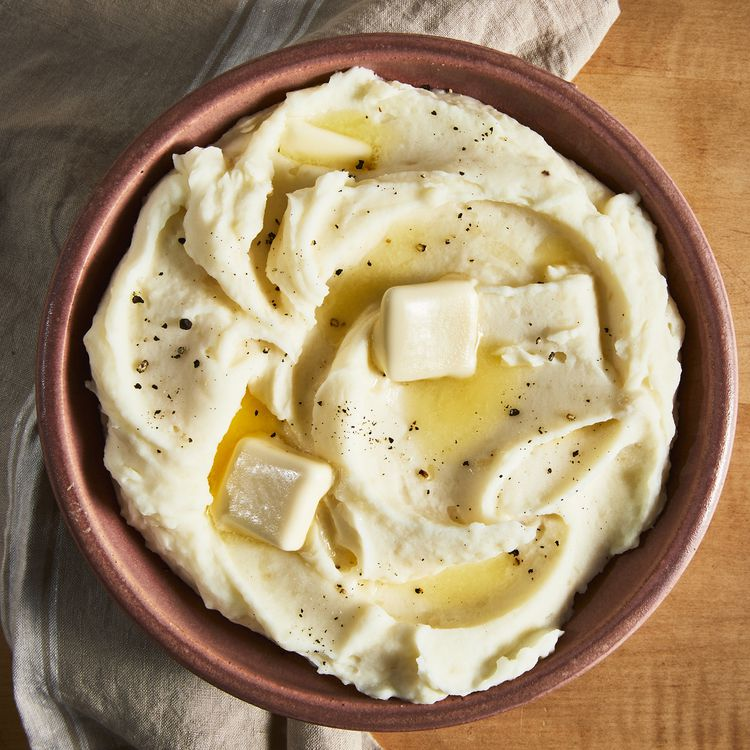

Recipe for mashed potatoes

Description
Simple basic recipe of mashed potatoes.
Ingredients
- 1 kg potatoes, peeled and quartered
- 1/2 cup milk
- 25 g of butter
- Salt and pepper to taste
- Optional: 1-2 cloves garlic, minced
Steps
- bring the water to a boil, then reduce the heat to medium.
- Let the potatoes simmer for about 15-20 minutes, or until they are tender and easily pierced with a fork.
- Once cooked, drain the potatoes thoroughly to remove all excess water. Return them to the pot.
- Add the butter to the potatoes and begin mashing with a potato masher or a fork.
- Gradually add the milk, continuing to mash until you reach your desired consistency.
- Season with salt and pepper to taste. Mix well to ensure the seasoning is evenly distributed.
Done!
This classic recipe yields creamy and comforting mashed potatoes that are perfect for any meal!
Back